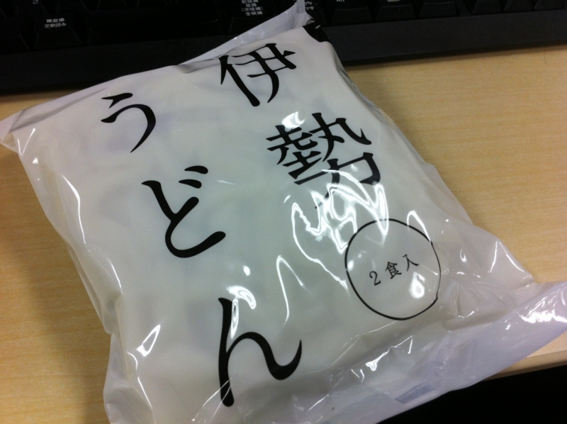
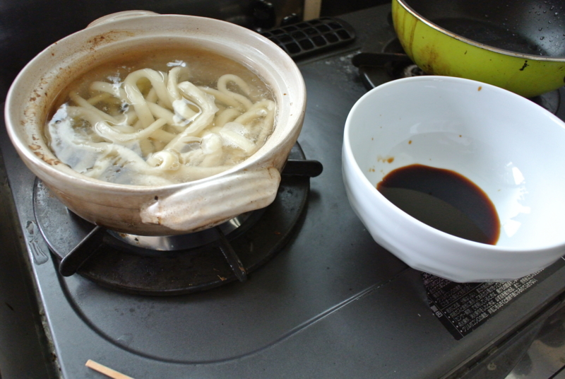
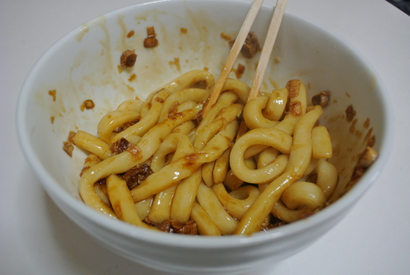

セブンイレブンで「伊勢うどん」をゲットした
公開日：

伊勢うどん（いせうどん）とは、三重県伊勢市を中心に食べられるうどん。 たまり醤油に鰹節やいりこ、昆布等の出汁を加えた、黒く濃厚なつゆ（タレ）を、軟らかく煮た極太の緬に絡めて食べる。徹底的にコシをなくした極太麺と濃厚なタレが特徴であり、麺を茹でる時間が非常に長く、通常のうどんが15分程度であるのに対して1時間弱ほど茹でる。
伊勢参りに行ったことがある人ならだれでも知っている「伊勢うどん」。そこいらのブームを当て込み奇をてらった「B級」グルメとは一線を画すシンプルさと旨さ。伝統と格式を誇りながら「A級」扱いされるのを拒む孤高の泥臭さ。この2つの絶妙なバランスとハーモニーが「伊勢うどん」の魅力を醸し出している。
こいつは東京で目にすることはあまりないのだけれど、なぜか会社の近くのセブンイレブンで売ってた。600円ぐらいするので、だいぶ高いけれど……そんなに高級な食い物じゃないんだけどな。

一度お湯を沸かしているのを忘れて1時間ぐらい本読んじゃって、鍋を燃やしてしまったけど気にしない。スペアの土鍋でもうどんは茹でられるんだ。

ツルッとしたうどんの肌が少しふやけて、わずかな隙間を作る。そこでうどんをあげて、ねっとりとどす黒い、それでいて塩辛さよりも甘さを感じさせる深いタレの海へ沈める。あとは、これでもか、これでもかとまんべんなくうどんとタレを絡め、白いカラダをドス黒く染め上げていくのだ。まるで瑞々しい生娘が世間を知った熟女へと成長するまさにそんな瞬間を切り取って、サディスティックにいたぶるような感覚が、そこにはある。
まぁ、そんなことやったことないけどな。
サクッとまとめると、伊勢うどんはちょっとのびてるかなーってぐらいまでゆがいたほうが、タレがちゃんとうどんに絡んで美味しい。ぐっちょんぐっちょんにかき混ぜて食べてほしいね。
薬味はネギだけ。ほんとは新鮮なネギを刻んで入れたいのだけれど、一人暮らしだとたいてい使い切れずに無駄にしてしまうので、常備はしていない。代わりに、アマゾンでゲットした乾燥ネギを戻して大量にぶち込んでいる。ただ、乾燥ネギは甘いので、ちょっと伊勢うどん（これも結構甘い）になじまなかった。